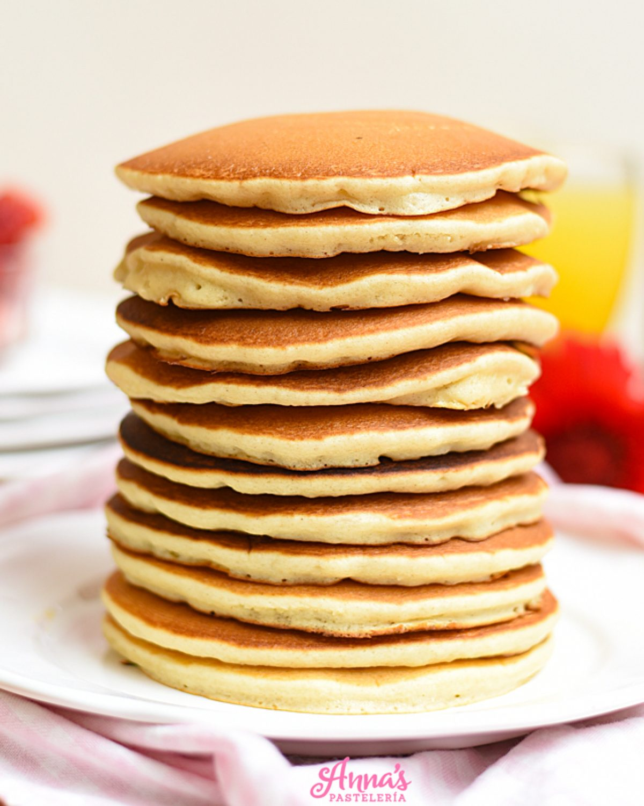

Pancakes

Description
Simple,easy and quick! The Best Fluffy Pancakes recipe you will fall in love with.
Our easy recipe will help you whip them up in less than 30 minutes.
Ingredients
- 2 cups all purpose | plain flour, (290 g | 10 oz)
- 1/4 cup granulated sugar or sweetener, (60g | 2 oz)
- 4 teaspoons baking powder
- 1/4 teaspoon baking soda
- 1 3/4 cups milk, (440ml)
Instructions
- Put 100g plain flour, 2 large eggs, 300ml milk, 1 tbsp sunflower or vegetable oil and a pinch of salt into a bowl or large jug, then whisk to a smooth batter.
- Set aside for 30 mins to rest if you have time, or start cooking straight away
- Set a medium frying pan or crêpe pan over a medium heat and carefully wipe it with some oiled kitchen paper.
- When hot, cook your pancakes for 1 min on each side until golden, keeping them warm in a low oven as you go.
- Serve with lemon wedges and caster sugar, or your favourite filling. Once cold, you can layer the pancakes between baking parchment, then wrap in cling film and freeze for up to 2 months.